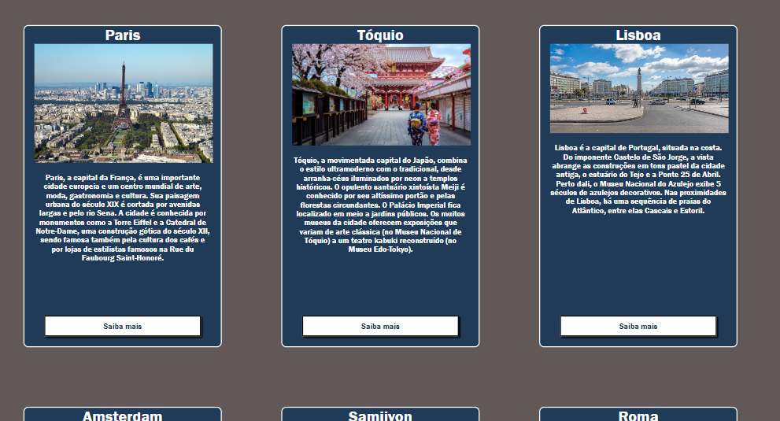
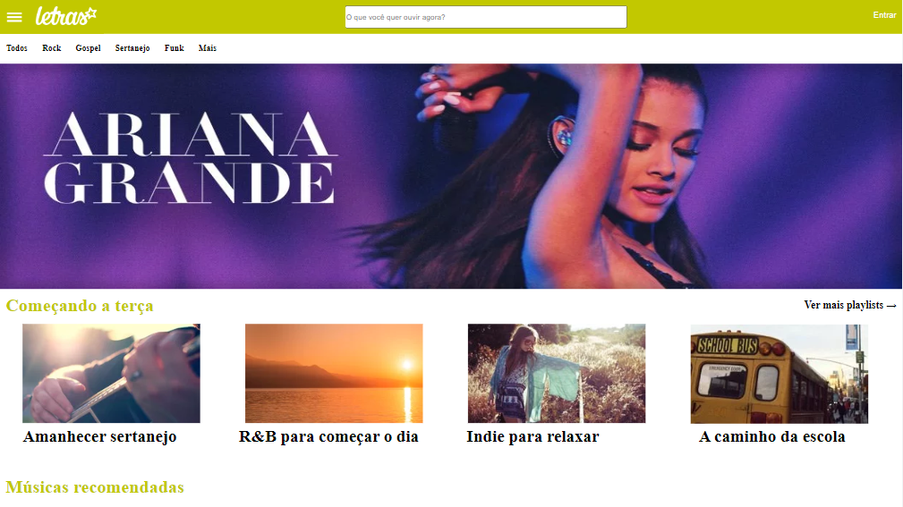
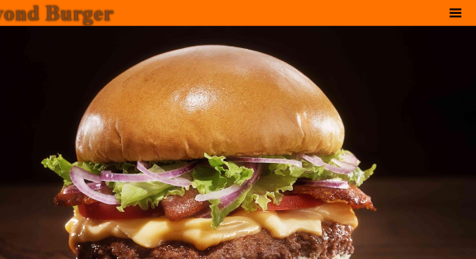
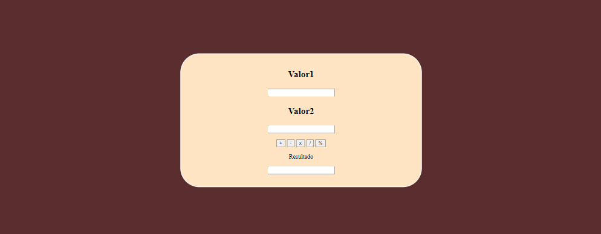
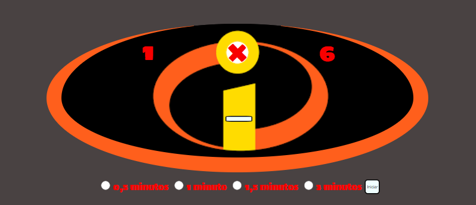
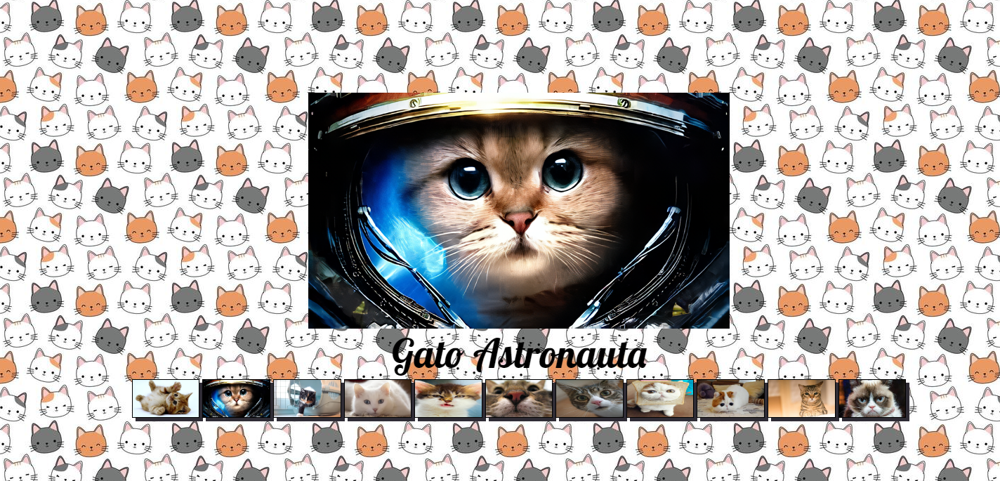
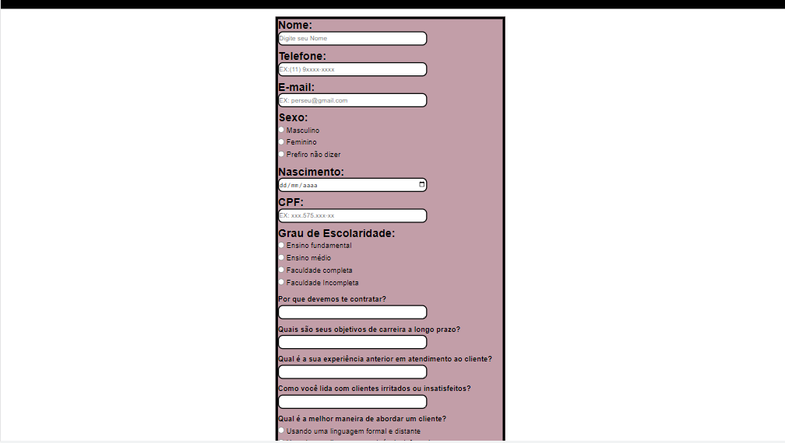

1° Site

Site básico, componentes de uma DIV
2° Site

Site letras, uma tentativa de recriar um site
3° Site

Site responsivo, menu flexível
4° Site
Site temático, aplicação dos componentes anteriores
5° Site

Site Calculadora, introdução ao javaSC
6° Site

Site Game, javaSC, limitar ações do usuário
7° Site

Site Galeria, javaSC, ações de substituição
8° Site

Site DOCS, utilizando vários tipos de Input